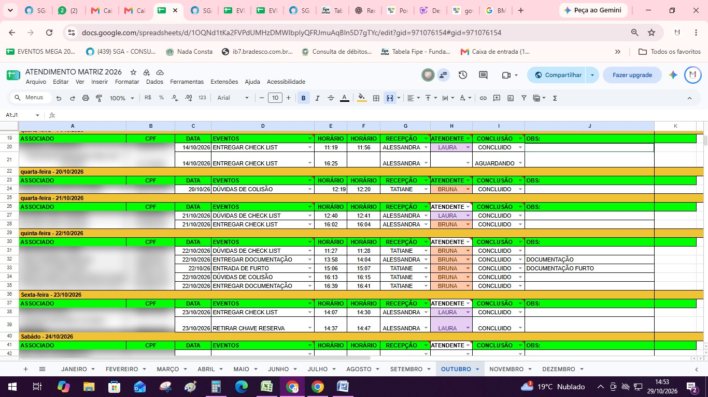

Cartilha de Atendimento Matriz
Atendimento presencial ao segurado na Matriz — da chegada na recepção ao registro no histórico. Guia interno de procedimentos do setor de Eventos.
Chegada do Segurado
Recepção, planilha de atendimento e consulta no Hinova.
Recepção do Segurado
- 1 O segurado se identifica no interfone e é recepcionado na recepção.
- 2 Apresenta um documento com foto.
- 3 A recepção coloca o segurado na planilha de atendimento, com o tipo de atendimento, nome e CPF.
- 4 O segurado aguarda ser chamado pelas atendentes do setor de Eventos.

O segurado se identifica no interfone, apresenta documento com foto e é lançado pela recepção na planilha de atendimento (tipo de atendimento, nome e CPF). Só o segurado é atendido, salvo idosos, deficientes ou quem tem dificuldade motora ou de leitura, que podem vir com 1 acompanhante.
Antes de Chamar o Segurado
Antes de chamar o segurado, consultar o cadastro dele no Hinova:
- 1 Confirmar o tipo de atendimento no histórico.
- 2 Analisar todas as informações: boletos, se é carro ou moto, eventos em aberto e finalizados.
- 3 Depois disso, chamar o segurado e prestar o atendimento e a recepção de documentos.
Antes de chamar, consultar o segurado no Hinova: confirmar o tipo de atendimento no histórico e analisar boletos, tipo de veículo e eventos em aberto e finalizados. Só então chamar e atender.
Atendimento e Registro
Conferência de documentos e registro no histórico.
Recepção e Conferência de Documentos
Durante o atendimento para recepção de documentos, a documentação precisa estar completa e correta. Por isso é feita a conferência dos documentos, para verificar se há alguma divergência.
Guia de indenização
Em casos de guia de indenização, a conferência é feita apenas para confirmar se todos os documentos solicitados foram entregues. A conferência total e a análise são feitas somente na base administrativa.
Toda documentação recebida é conferida e precisa estar completa e correta. Documento com pendência não é recebido, salvo autorização prévia da supervisão. Na guia de indenização, só se confere se tudo foi entregue; a análise completa é na base administrativa.
Registro no Histórico
Depois de qualquer atendimento, seja presencial, pelo WhatsApp ou e-mail, registrar no histórico:
- ● O tipo de atendimento
- ● O motivo
- ● Se houve pendências ou não
- ● Ou se foi somente para dúvidas
Todo atendimento (presencial, WhatsApp ou e-mail) é registrado no histórico com tipo, motivo, pendências ou dúvidas. Na abertura de sinistro, cadastrar o evento no Hinova com base no documento recebido.
Tipos de Evento
Roubo/furto e perda parcial.
Evento de Roubo / Furto
Chaves
| Evento | Recepcionar |
|---|---|
| Furto | Chave original e chave reserva |
| Roubo | Somente a chave reserva |
Recuperação do veículo
No furto, recepcionar a chave original e a reserva; no roubo, só a reserva. Nunca informar ao segurado a recuperação do veículo, mesmo que conste no histórico: quem informa é o setor responsável, com o veículo já no pátio. Documentos sempre em cópia.
Evento de Perda Parcial
Inclui colisão, incêndio, veículo recuperado com avarias etc.
- 1 Recepcionar a documentação completa e conferida.
- 2 Deixar o segurado ciente do valor da franquia.
Na perda parcial (colisão, incêndio, recuperado com avarias etc.), depois de receber a documentação completa e conferida, informar o segurado sobre o valor da franquia. Documentos sempre em cópia.
Conduta
Regras que valem para todo atendimento.
Regras de Conduta no Atendimento
Nunca preencher, ditar formulários ou fazer registros pelo segurado. Com dificuldade, ele vem com acompanhante. Exaltação ou palavras de baixo calão encerram o atendimento na hora.